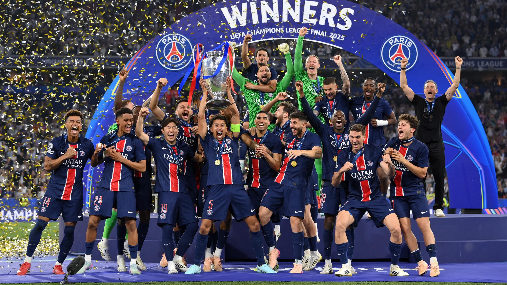

A 2025–26-os UEFA Bajnokok Ligája-idény ismét Európa legerősebb klubcsapatait vonultatja fel, és a megújult lebonyolítási rendszer továbbra is izgalmas, kiszámíthatatlan mérkőzéseket hoz. A sorozat második éve zajlik az úgynevezett „ligafázisos” formátumban, amelyben a korábbi csoportkör helyett egy nagy, 36 csapatos alapszakasz dönt a kieséses szakaszba jutásról.
A ligafázisban minden csapat nyolc különböző ellenféllel mérkőzik meg – négy hazai és négy idegenbeli találkozón. Az első nyolc helyezett automatikusan bejut a nyolcaddöntőbe, míg a 9–24. helyen végző együttesek rájátszásban harcolnak a továbbjutásért. Ez a rendszer több rangadót és kevesebb „tét nélküli” mérkőzést eredményez.
Az idei kiírás egyik érdekessége a fiatal játékosok előretörése. Több topklubban is kulcsszerepet kapnak a húszas éveik elején járó labdarúgók, akik bátran felveszik a versenyt a rutinos világsztárokkal. A Bajnokok Ligája hagyományosan az a színtér, ahol új csillagok születnek, és az idei szezon sem kivétel.
A kieséses szakasz tavasszal kezdődik, és a párharcok oda-visszavágós rendszerben dőlnek el. A döntőt 2026 májusában rendezik, amely ismét a klubfutball egyik legnézettebb sporteseménye lesz világszerte. A Bajnokok Ligája nem csupán trófea: presztízs, történelem és gazdasági jelentőség is társul hozzá, így minden résztvevő számára kiemelt cél a minél jobb szereplés.
| Helyezés | Csapat | Mérkőzés | Pontszám | Gólkülönbség |
|---|---|---|---|---|
| 1 | Arsenal | 8 | 24 | +19 |
| 2 | Bayern München | 8 | 21 | +14 |
| 3 | Liverpool | 8 | 18 | +12 |
| 4 | Tottenham Hotspur | 8 | 17 | +10 |
| 5 | Barcelona | 8 | 16 | +8 |
| 6 | Chelsea | 8 | 16 | +7 |
| 7 | Sporting CP | 8 | 16 | +6 |
| 8 | Manchester City | 8 | 16 | +6 |
| 9 | Real Madrid | 8 | 15 | +9 |
| 10 | Inter Milan | 8 | 15 | +8 |
| 11 | Paris Saint-Germain | 8 | 14 | +10 |
| 12 | Newcastle United | 8 | 14 | +10 |
| 13 | Juventus | 8 | 13 | +4 |
| 14 | Atlético Madrid | 8 | 13 | +2 |
| 15 | Atalanta | 8 | 13 | 0 |
| 16 | Bayer Leverkusen | 8 | 12 | -1 |
| 17 | Borussia Dortmund | 8 | 11 | +2 |
| 18 | Olympiacos | 8 | 11 | -4 |
| 19 | Club Brugge | 8 | 10 | -2 |
| 20 | Galatasaray | 8 | 10 | -2 |
| 21 | AS Monaco | 8 | 10 | -6 |
| 22 | Qarabag | 8 | 10 | -8 |
| 23 | Bodø/Glimt | 8 | 9 | -1 |
| 24 | Benfica | 8 | 9 | -2 |
